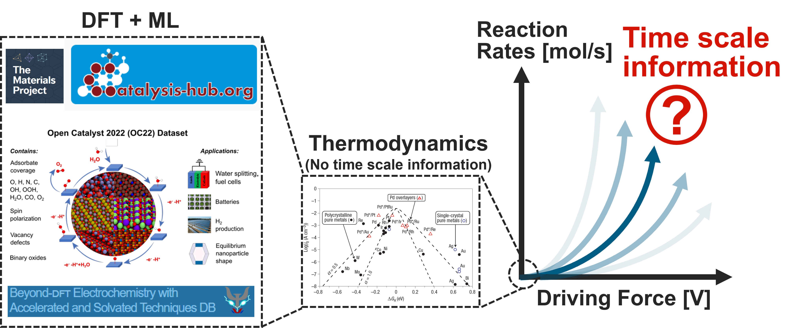
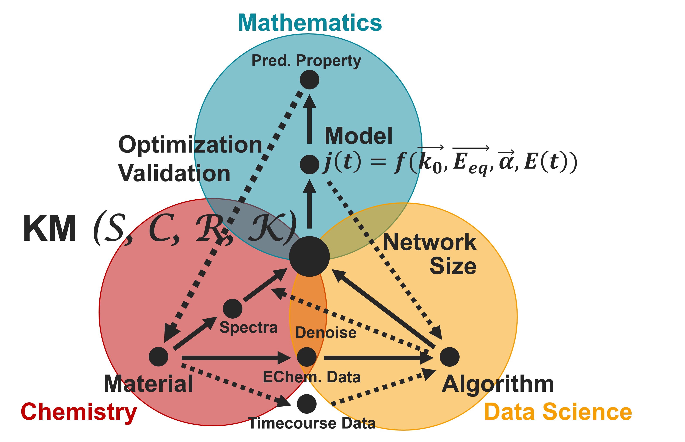
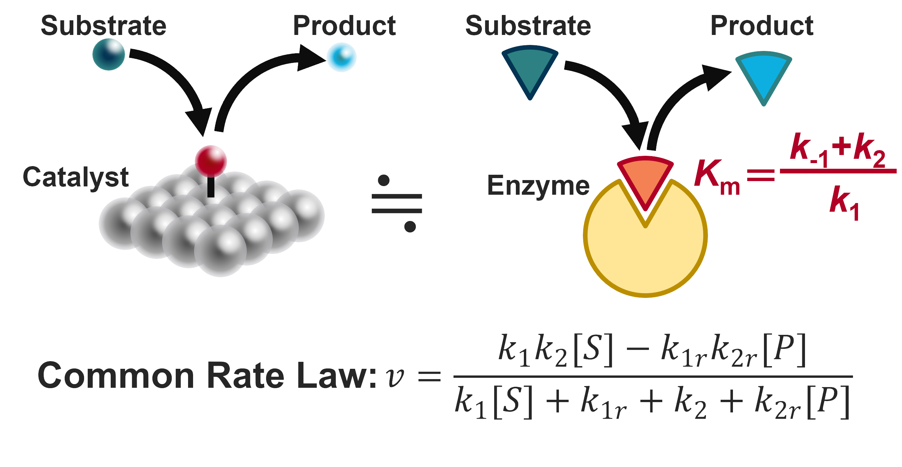

燃料電池や水の電気分解によるグリーン水素製造など、電極触媒は次世代のエネルギー変換に不可欠です。しかし、最も反応効率の高い電極触媒は白金やイリジウムなどの希少元素が必要です。このため、水素関連技術を社会実装するためには貴金属使用量を減らした触媒材料の開発が必要です。
現在、優れた材料を開発する上で量子化学計算（DFT）が盛んに活用されています。特に、触媒と反応基質との間の吸着エネルギーを計算することで、触媒反応がどの程度熱力学的に有利かを調べることができます。特に最近では機械学習や人工知能を活用することで、何千もの候補材料から優れたものを選定することが可能となりました。
このように、既存の触媒開発は時間情報を含まない熱力学をもとに、材料の良し悪しを判定しています。これに対し、触媒の最も重要な性質は、反応がどれくらい速いか？材料がどれくらい長持するか？など、本質的に時間スケールに関わるものです。この乖離を解消し、優れた材料の開発と触媒反応の真の理解を目標に、速度論を主軸とする数理触媒研究チームが発足しました。

量子化学計算による既存の触媒開発と速度論の関係性

本研究室で行っている研究内容の紹介。KMは速度論的反応機構（Kinetic Mechanismの略）。
電極触媒において最も重要な特性は電流密度の時間変化 j(t) です。高い活性を持つ触媒であれば、電流密度は大きくなります。また、安定な材料であれば長期間、電流密度を維持することができます。競合反応との選択性（OERとCERなど）は、目的反応との部分電流密度の比較から評価することができます。
これらの触媒特性は究極的には中間体、素反応、そして速度定数から決まる速度論的反応機構で決定おされます。したがって、本研究では主要な触媒特性（活性・安定性・選択性）を反応機構から予測するための理論式を導出することを目的とします。これまでの研究はすべて質量作用の法則に従うモデルを扱ってきましたが、最近ではより物理的なモデルを構築することで、溶出や剥離による触媒劣化のモデルを作ろうとしています。
代表論文： ChemSusChem 2025, JPCL 2024, JPCL 2019.
本研究では、実際に優れた触媒材料を開発します。このことにより直接次世代のエネルギー関連技術の開発に貢献するだけでなく、速度論的理解の重要性を示します。
これまでの多くの基礎研究は小さな電流密度領域（mA/cm2オーダー）に注目してきました。このような平衡近傍の触媒特性なら熱力学に基づく予測が可能です。しかし、実際に要求される反応速度は2，3桁大きいもの（A/cm2オーダー）であり、このような環境ではTafel Slopeなど、速度論的な因子の影響が大きくなってきます。このように、実際に材料が活用される環境とこれまで材料が評価されてきた環境の乖離があるため、速度論を軸とすることでこれまで見落とされてきた材料の再発見が可能だと期待されます。
また、速度論解析により材料寿命の評価を加速しようとしています。実験だけで長寿命材料を開発するのは大変です。一つの測定に数週間から数か月単位の時間がかかる上、優れた材料であればあるほど寿命が長く、試験時間が長くなります。このため、私たちは分単位の測定から速度論的機構を同定するアルゴリズムを開発しようとしています。このことにより触媒寿命を予測することができれば、材料評価に必要な試験時間を大幅に短縮することが可能となり、優れた材料の開発にも繋がります。
代表論文： JPCL 2024.
これまでの触媒研究において速度論に焦点が当てられてこなかった大きな理由として、速度定数の評価が難しいことが挙げられます。量子化学計算で活性化障壁を計算した場合、少なくとも0.03 eVの誤差があります。しかし、これを室温速度定数に換算すると約5倍の誤差になってしまいます。これはそのまま、反応速度や寿命の誤差にも繋がってしまうため、速度論で触媒特性を予測するにはより正確な速度定数を求める技術が不可欠です。
そこで本研究室では、実験データから速度定数を抽出するアルゴリズムを開発しています。これまで、水素発生反応のTafel Plotをフィッティングするための遺伝的アルゴリズムを開発してきました。最近では、酸素発生反応など、より複雑な反応を解析するためのアルゴリズムも開発しています。また、非定常な電気化学測定や時系列データ、in-situ分光のデータにも取り組んでいます。想定している反応機構が正しい場合、すべての実験データを再現しうる速度定数が存在するはずです。このため、本研究で開発する手法は速度定数の同定のみならず、反応機構の妥当性を評価する上でも役立ちます。
代表論文： ACS Catalysis 2021.
私たちは化学反応の反応機構を特定するデータ解析手法を開発しています。これまで、数百から数万件のUV-Visや小角X線散乱（SAXS）データの解析実績があります。もし大量のデータをお持ちで解析に困っておられる方がいらっしゃれば、ぜひお声かけください。現在、スペクトルのノイズ除去や自動フィッティングに関する共同研究を推進中です。
代表論文： Nat. Commun. 2024, JPCL 2024, ACS Catalysis 2021.
この研究室の二つ目の強みは光導波路分光法です。イメージとしては、in-situ ATR UV-Visです。表面高感度であり、入射角を変えることでサンプルの深さ方向の分析も可能です。スペクトルを秒単位で取得できることもあり、電極触媒反応の解析に優れています。もし測りたいサンプルがあれば、ぜひご連絡ください。

人工触媒と酵素触媒の類似性
上で掲げた方向性はどれも電極触媒に関するものです。しかし、速度定数を求め、そこから特性予測を行う理論手法は人工材料に限ったものではありません。特に、ミカエリス・メンテン型の反応機構を持つ酵素は、一つしか中間体がないため、その速度式は水素発生反応などの電極触媒反応とほとんど同じ形になります。これを土台とし、基質と触媒の結合強度の指標となるミカエリス・メンテン定数(Km)が基質濃度と等しい時に酵素活性が最大となることを理論的に予測しました。さらに、約1000種類の野生型酵素を対象としたバイオインフォマティクス解析により、自然界でもKm = [S] (2023 Nat. Commun.)という法則が尊重されていることが示唆されました。これからも電極触媒でも、それ以外の系でも共同研究を楽しみにしています。
代表論文： Nat. Commun. 2023, Angewandte 2024, Biosci. Biotechnol. Biochem. 2025.